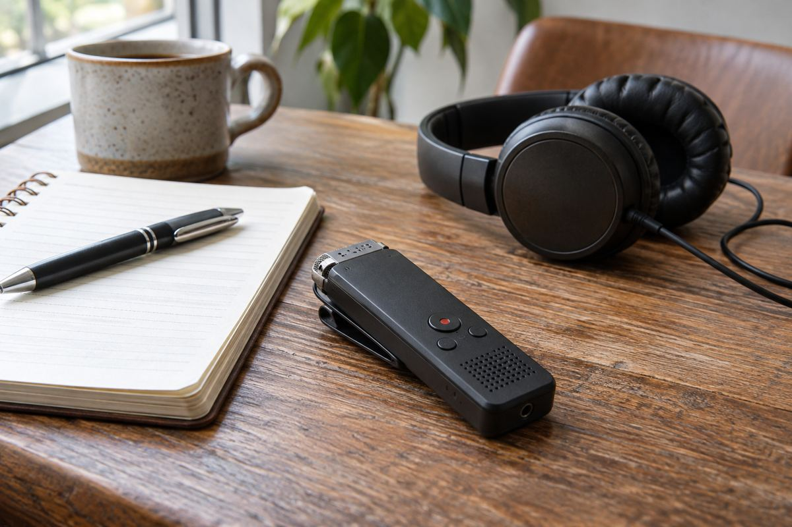

오디오·개발 / EXPLAINED
AI 녹음기, 클라우드가 바뀌면? reSpeaker Clip이 내세운 공개 펌웨어
Seeed가 개발·복구 경로를 설명했다. 독립 녹음과 AI 전사·요약 기능은 서로 다른 단계다.

Seeed Studio가 11월 6일 reSpeaker Clip의 공개 펌웨어와 개발 도구, 복구 절차를 설명하는 자료를 게시했다. 이 장치는 단독 녹음과 로컬 저장을 지원하고, 개발자가 녹음 데이터를 다른 음성 인식·AI 처리 흐름에 연결할 수 있도록 설계됐다고 회사는 밝혔다. 이번 소식은 그날 처음 판매됐다는 신제품 출시 확인이 아니라, 제품을 얼마나 수정하고 유지할 수 있는지에 관한 공식 설명이다.
reSpeaker Clip은 개발자와 제작자를 겨냥한 착용형 AI 녹음기다. Seeed는 소형 개발 보드와 센서 등도 공급하는 업체로, 이 제품 역시 완성된 앱만 쓰는 방식 외에 개발 경로를 강조한다. 일반적인 녹음기에서 음성을 저장하는 것과 그 음성을 문장으로 바꾸거나 요약하는 것은 다른 작업이다. AI라는 이름만으로 모든 처리가 장치 안에서 이루어진다고 생각하면 실제 데이터 이동을 잘못 이해할 수 있다.
공개된 코드가 바꾸는 선택권
공식 자료에 따르면 펌웨어 기반은 nRF5340과 nRF7002 플랫폼, Zephyr RTOS에 바탕을 둔 nRF Connect SDK 3.3.0이다. 펌웨어는 녹음 상태와 연결, 저장, 전원 같은 장치 동작을 맡는다. 소스 코드와 개발 문서에 접근할 수 있으면 개발자가 이런 동작을 살피고 필요한 부분을 바꿀 출발점이 생긴다. 다만 코드가 공개됐다는 것과 하드웨어 설계 전체가 공개됐다는 것은 같은 주장으로 볼 수 없다.
회사 설명에는 블루투스 OTA 업데이트와 USB 직렬 복구 경로가 함께 나온다. OTA는 케이블 없이 펌웨어를 전달하는 방식이다. USB 쪽은 직렬 연결과 mcumgr SMP를 쓰는 복구 절차로, 일반적인 native USB DFU와 혼동하지 말아야 한다. MCUboot와 업데이트 도구가 제공돼도 잘못된 펌웨어나 하드웨어 고장이 사라지는 것은 아니다. 수정할 수 있다는 장점과 복구 절차를 이해해야 한다는 부담이 함께 있다.
녹음은 로컬, 분석은 선택한 구성에 따라
단독 녹음과 저장은 AI 클라우드에 계속 연결하지 않아도 가능하다는 설명이다. 이후 전사나 요약을 어디에서 수행할지는 연결한 서비스와 소프트웨어에 달려 있다. 개발자가 로컬 처리 환경을 구성할 여지가 있다는 것과 구입 직후 모든 언어의 전사·요약이 기기 내부에서 무료로 동작한다는 주장은 다르다. 공식 자료는 후자를 보장하지 않는다.
편집부의 분석으로는 이런 구조는 녹음 데이터를 자체 시스템으로 옮기거나 특정 업체 서비스에 대한 의존을 줄이려는 팀에 의미가 있다. 그러나 공개 펌웨어 자체가 개인정보 보호나 무상 AI 서비스를 보장하지는 않는다. 실제 전송 경로, 저장 위치, 접근 권한과 외부 처리 비용을 따로 검토해야 한다. 녹음 뒤 어떤 서버로 자료가 이동하는지 확인하는 작업은 장치 이름보다 중요할 수 있다.
일반 독자가 자동 전사만 원한다면 개발 도구의 존재만으로 더 편한 제품이라고 판단하기 어렵다. SDK 지원과 플랫폼별 기능도 계속 바뀔 수 있어 현재 문서를 확인해야 한다. 이번 자료에는 모든 사용 환경에 적용할 전사 정확도나 배터리 수명, 장기 지원 종료일의 보장이 없다. 이 기사는 실제 녹음을 시험한 평가가 아니라 공개 자료를 통해 소유·수정·유지의 범위를 살펴본 해설이다.